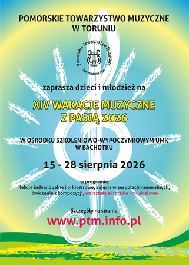
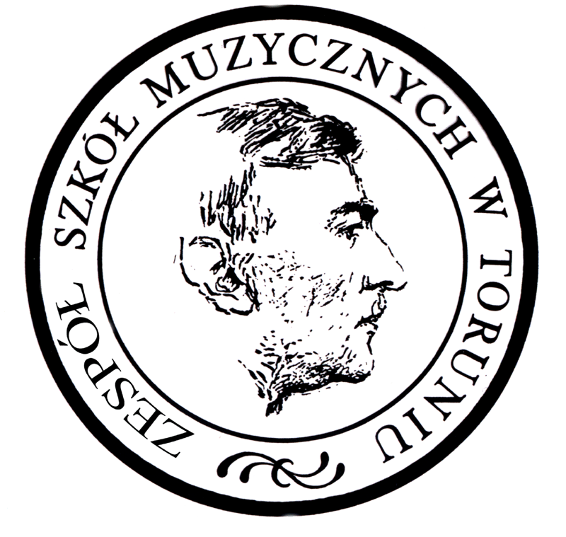
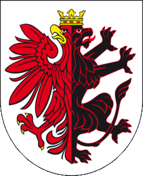
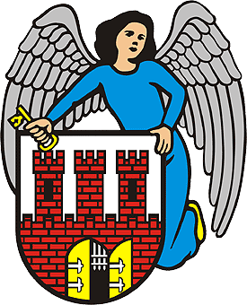
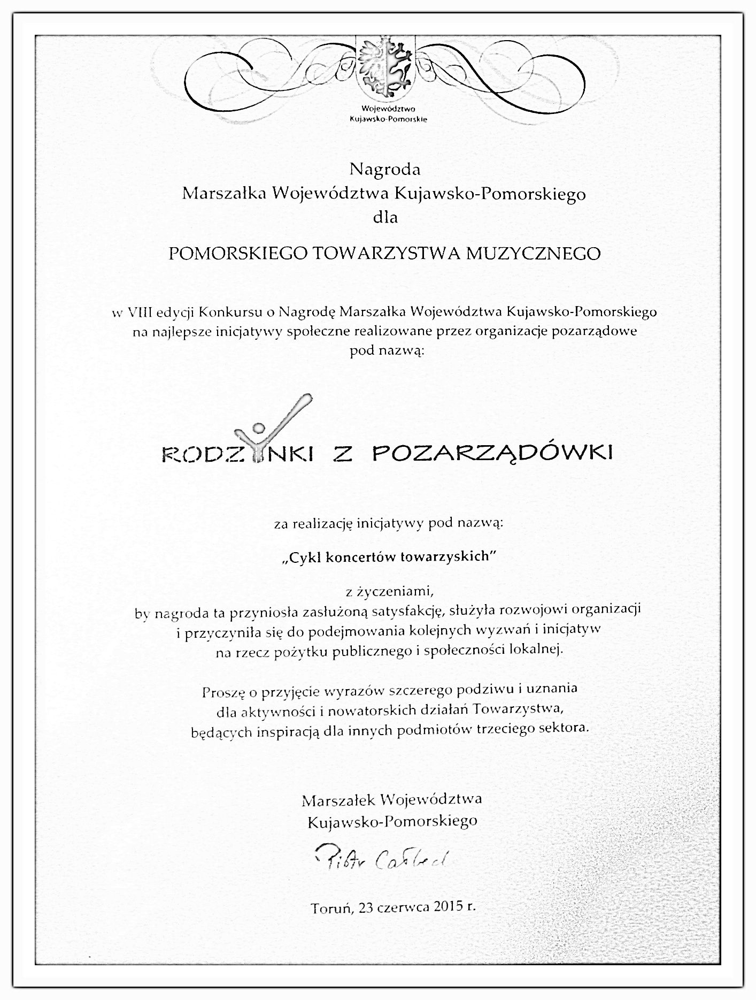

Pomorskie Towarzystwo Muzyczne
Pomorskie Towarzystwo Muzyczne reaktywowane w listopadzie 2012 roku stanowi kontynuację działalności założonego w 1921 roku jednego z najważniejszych stowarzyszeń w naszym regionie. Nawiązuje do jego tradycji oraz form działalności. Najważniejszym jego celem jest rozwijanie i upowszechnianie kultury muzycznej i edukacji artystycznej w regionie oraz ich promocja w Polsce i Europie. Głównymi wydarzeniami organizowanymi przez PTM są obecnie Wakacje Muzyczne z Pasją oraz Festiwal Młodej Muzyki.PTM na Facebooku
PTM na YouTube
Pobierz deklarację OPP (1.5%)
{kind=link}
{kind=link}

Wakacje Muzyczne z Pasją 2026
Musical w Bachotku
zobacz i posłuchaj
Teledysk do piosenki Tango Szach
Nowość: Musical 2

Towarzystwo współpracuje z:Centrum Kultury Dwór Artusa
Zespołem Szkół Muzycznych


Projekty Pomorskiego Towarzystwa Muzycznegosą finansowane przez Urząd Marszałkowski
Województwa Kujawsko-Pomorskiego
oraz Urząd Miasta Torunia.
Nagroda Marszałka Województwa Kujawsko-Pomorskiego dla Pomorskiego Towarzystwa Muzycznego Rodzynki z Pozarządówki za cykl koncertów towarzyskich
{kind=link}
